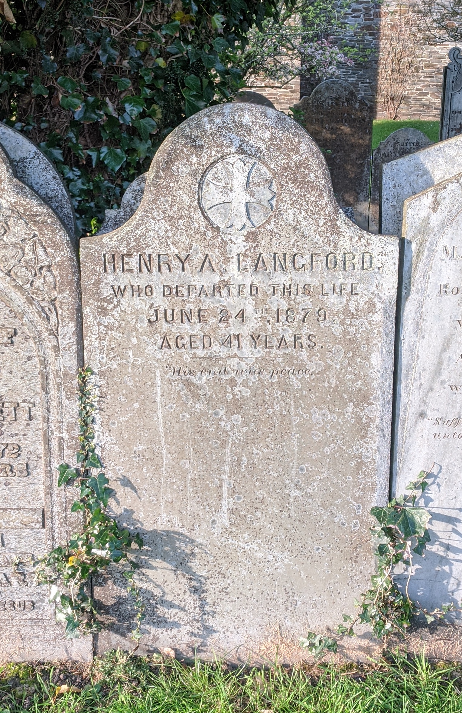

Henry Albert Langford
Henry Albert was probably born in Liskeard in late 1837 (BMD record).
He married Clara Louisa Johns (née Braginton) in 1866.
His daughter’s birth certificate gives his profession as “general merchant” in 1872. His probate and death certificate (see below) gives his profession as “accountant”.
There is a grave for “Henry A Langford” in St Mary’s Church, Callington, Cornwall, with inscription:
Henry A Langford who departed this life June 24th 1879, aged 41 years. “His end was peace”.

His death certificate gives the cause of death as “Pulmonary Phthisis; Several months; Certified by John Kempthorne FRCS” 1. Pulmonary phthisis is tuberculosis. Henry’s brother E C Langford registered the death; the brother has an address in Plymouth.
See Henry A Langford probate listing:
{kind=link}
LANGFORD, Henry Albert. Personal estate £28 13s. 1881, 10 December. Administration of the Personal Estate of Henry Albert Langford late of Callington in the county of Cornwall Accountant who died 24 June 1879 in Callington was granted at Bodmin to Clara Louisa Langford of 5 North-Hill- terrace Plymouth in the County of Devon Widow of the Relict.
England & Wales, National Probate Calendar (Index of Wills and Administrations), 1858-1966 - Ancestry.com - 1,1904::0 - 1,1904::5114587
Three things stand out from this death certificate and probate:
- Henry Albert is living in Callington, which is about 15 miles away from Plymouth, where his children were born, and where his wife was living two years later for the census. Maybe he had moved out of the family home. His brother certified the death, rather than his wife - was this typical?
- The probate seems to have taken a long time; he died in June 1879, but the probate is resolved a year and half later in December 1881.
- He only left £28; that seems strangely small given his profession “Accountant”.
The 1871 census lists “John Kempthorne, Head, M, 49, Physician & Surgeon, Bodmin Cornwall, FRCS London & LRCP London”.↩︎